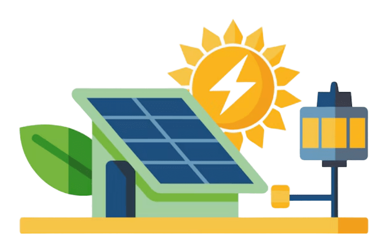
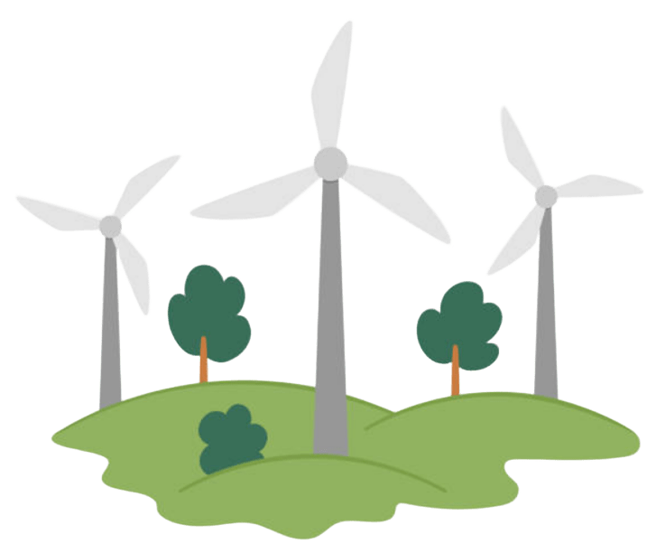
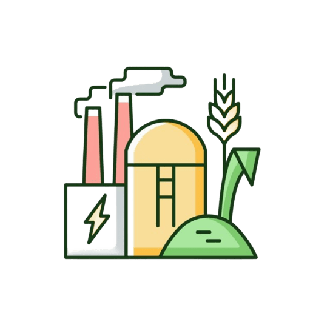

AGRINHO 2025
Festejando Conexão Campo Cidade

A energia elétrica é essencial para o desenvolvimento das comunidades rurais.
Em muitas áreas rurais, o acesso à energia elétrica ainda é limitado ou instável. Isso dificulta a produção agrícola, o armazenamento de alimentos e a qualidade de vida das famílias.

As energias renováveis são essenciais para o desenvolvimento sustentável nas áreas rurais, proporcionando soluções econômicas e ambientalmente amigáveis.
A energia solar é captada através de painéis fotovoltaicos que convertem a luz do sol em eletricidade. É amplamente utilizada para bombear água, iluminar residências, alimentar equipamentos agrícolas e até pequenas indústrias rurais. Além disso, é uma fonte limpa que reduz a dependência de combustíveis fósseis e minimiza impactos ambientais.

A energia eólica é gerada por turbinas que aproveitam a força do vento para produzir eletricidade. Essa tecnologia é ideal para áreas rurais com ventos constantes, contribuindo para a autonomia energética das propriedades e para o abastecimento das comunidades, além de ser uma fonte sustentável e renovável que reduz custos a longo prazo.

A energia de biomassa é obtida a partir da queima de resíduos orgânicos, como restos de cultura, esterco e resíduos florestais. Essa fonte permite o aproveitamento dos resíduos agrícolas para gerar calor ou eletricidade, promovendo a economia circular no campo e reduzindo a emissão de gases poluentes.

Expansão da rede elétrica e melhoria da qualidade do fornecimento.
Programas de apoio à instalação de painéis solares e turbinas eólicas.
Treinamentos para uso eficiente da energia e manutenção de sistemas.
Fomentar colaborações entre governos e empresas para acelerar projetos de eletrificação rural.
Implantar sistemas autônomos, como microgeração solar e mini-eólicas para comunidades isoladas.
Oferecer benefícios tributários para produtores e consumidores de energia renovável no campo.
Implementar sistemas inteligentes para acompanhar e reparar falhas rapidamente em áreas remotas.
Promover campanhas para conscientizar sobre uso sustentável e conservação de energia.
Facilitar o acesso a crédito para agricultores adquirirem equipamentos de energia renovável.
• No campo, a energia mais utilizada ainda é a energia elétrica fornecida pela rede convencional, mas muitas regiões rurais dependem de fontes alternativas como geradores a diesel devido à falta de infraestrutura.
• Com o avanço das energias renováveis, o uso de painéis solares e pequenas turbinas eólicas tem crescido, oferecendo soluções mais sustentáveis e econômicas para comunidades rurais isoladas.